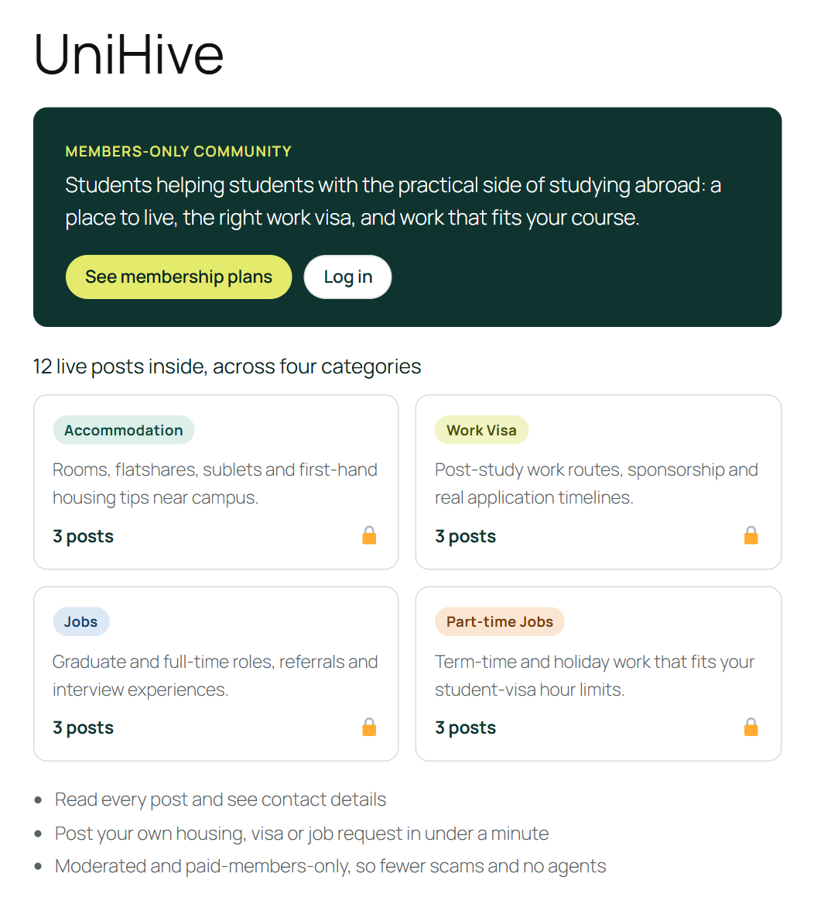
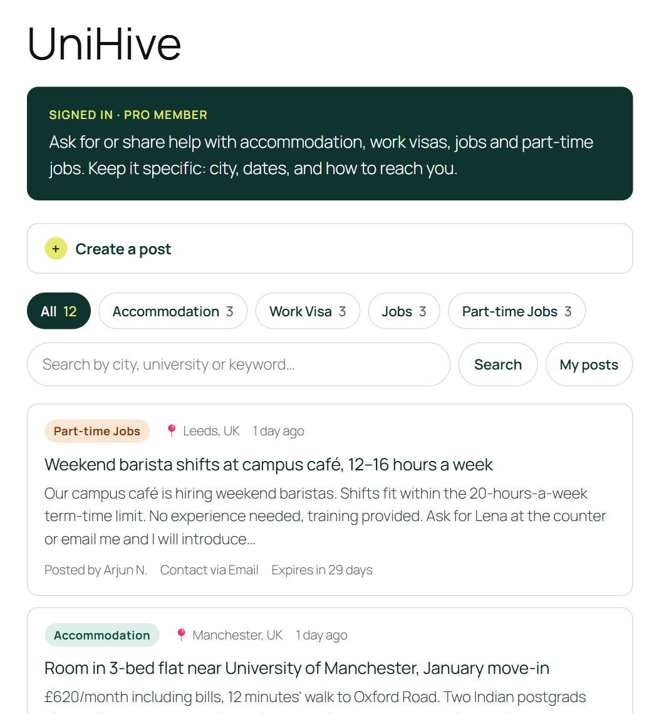
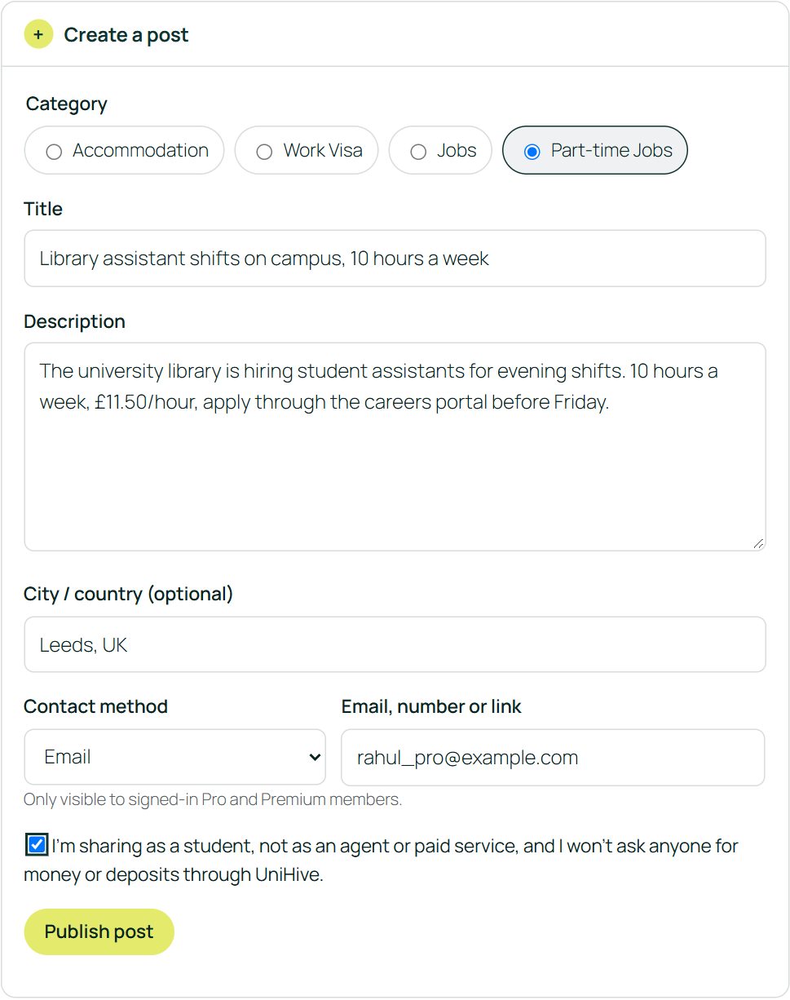
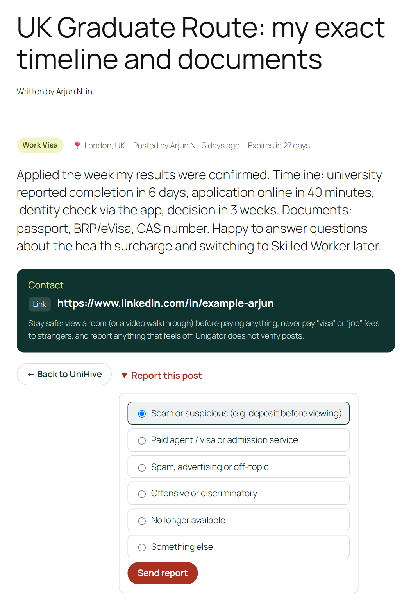
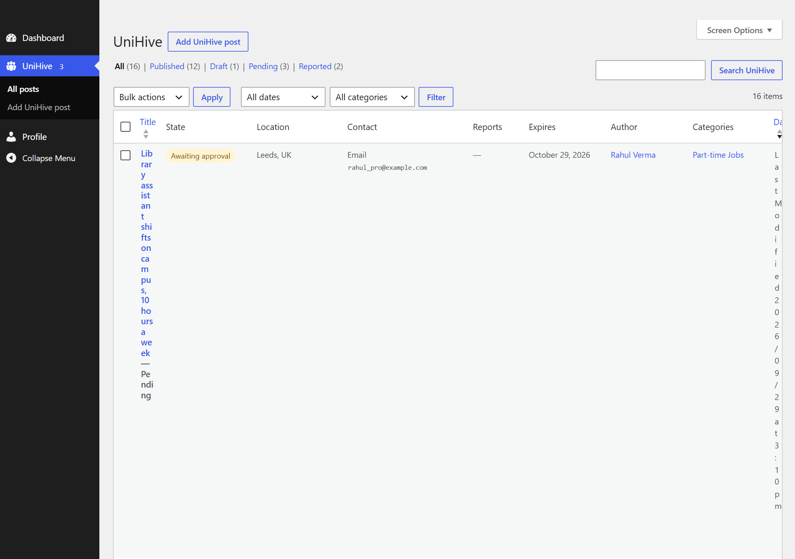
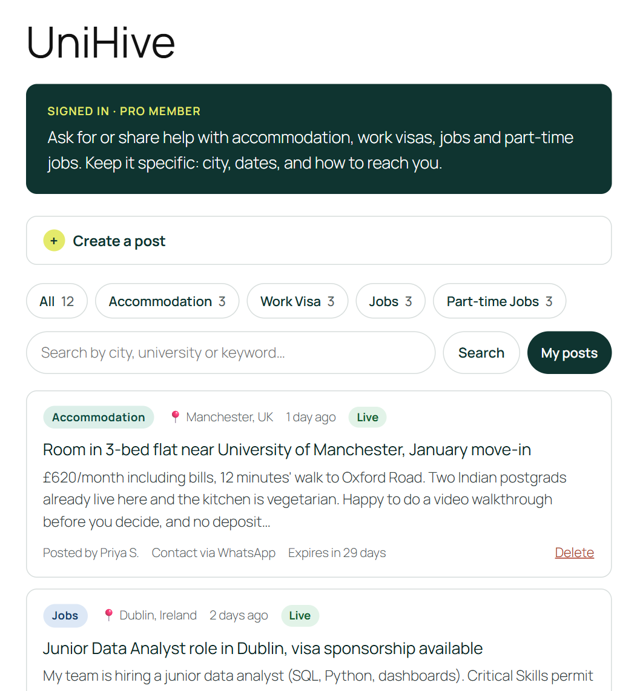
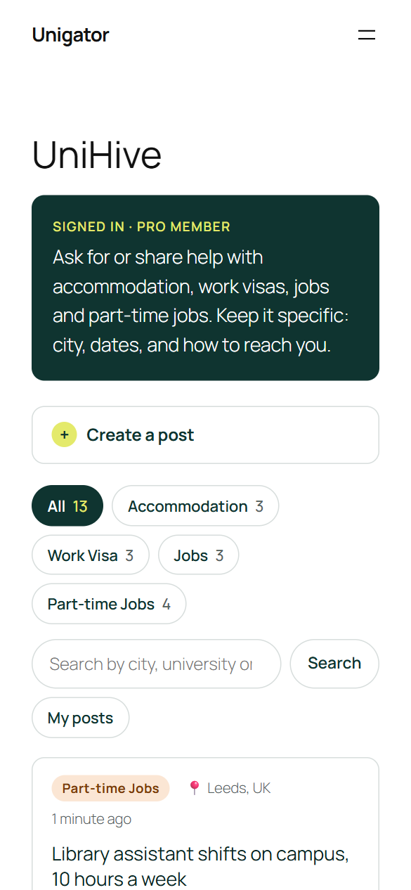

UniHive on WordPress
How I understand UniHive, how it should differ from YMGrad, and how I would build it in WordPress.
Summary
- UniHive is Unigator's members-only help board for four practical needs students face once they have been admitted: Accommodation, Work Visa, Jobs and Part-time Jobs. It is the "we also connect you to each other" part of the Unigator story.
- Only Pro and Premium members can read posts, see contact details and create posts. Visitors and Free members see a teaser (what's inside, live post counts, an upgrade button), so UniHive helps sell membership instead of giving it away.
- It should not copy YMGrad. YMGrad's forum is an open, uncategorised feed that feeds an agency's paid counselling. UniHive is a structured, moderated, time-limited noticeboard with a strict no-agents rule, because the posts themselves are what members pay for.
- Build: custom post type + taxonomy + custom fields in one small plugin, with Paid Memberships Pro (free) handling plans and payments. Forum plugins are built for threaded discussion, which is a different job.
- To check the plan holds up, I built a small working prototype of it (screens in Appendix A). It runs locally with one command.
1How I understand UniHive in the context of Unigator
Unigator's mission is "Every student deserves a guide, no matter where they start." The Our Story page is written for students who don't have a network abroad, and it describes UniHive as the place for "a job lead, a place to live, or just a familiar voice". The site already covers the journey with Pre-application/Search → Application tracker → Student Life → Post Graduation, plus paid services (Housing Help, Visa Checklist, etc.).
So my reading is: Unigator's own content and services give the guidance, and UniHive gives the network. Members who are a year or two ahead share rooms, visa timelines, referrals and part-time openings with members who are just arriving. Most of UniHive's value is in the Student Life and Post Graduation stages, which are exactly where a student with no contacts abroad struggles most.
Who can view posts?
| Audience | UniHive page | Read posts | Contact details | Create posts | Moderate |
|---|---|---|---|---|---|
| Visitor (logged out) | Teaser | No | No | No | No |
| Free member | Teaser + upgrade | No | No | No | No |
| Pro member | Full | Yes | Yes | Yes | Own posts |
| Premium member | Full | Yes | Yes | Yes | Own posts |
| Moderator / Admin | Full | Yes | Yes | Yes | All posts |
Viewing is limited to Pro and Premium members (plus staff). There are two reasons:
- The posts are the paid value. If anyone can read them, there is little reason to upgrade.
- The posts contain students' phone numbers and emails. Keeping them behind a paid login protects members from scrapers, spammers and fake "agents".
The page itself stays public as a teaser. It shows the four categories, how many live posts each one has, and a clear upgrade/login button, so UniHive still sells membership and can still be found.
Who can create posts?
Logged-in Pro and Premium members with an active plan. They post through a simple front-end form and never need wp-admin. They can delete their own posts and renew them when they expire. If a plan lapses, the member loses the ability to read and post automatically. Moderators and admins can also create posts, for example a pinned "How to spot a rental scam" guide in Accommodation.
One thing I'd confirm with you: should Premium get anything extra in UniHive (e.g. pinned or highlighted posts, more active posts at a time)? The build supports this, but the brief treats Pro and Premium the same.
The four categories, and why these four
| Category | Typical posts | Journey stage | Why it gets its own category |
|---|---|---|---|
| Accommodation | Rooms, flatshares, sublets, flatmate searches, "is this landlord genuine?" | Pre-arrival, Student Life | The first and most urgent need, and the one with the most scams. The founder's own story (lost deposits) is exactly why trust matters most here. |
| Work Visa | Post-study work routes (UK Graduate Route, Canada PGWP, Australia 485, Germany's job-seeker permit), sponsorship, real timelines and documents | Post Graduation | High-stakes, country-specific and time-sensitive. Peers' real timelines are hard to find anywhere else. Posts should be experiences, not paid advice (see risks). |
| Jobs | Graduate and full-time roles, referrals, sponsorship-friendly employers, interview experiences | Post Graduation | Referrals travel through networks, which is exactly what Unigator's audience lacks. |
| Part-time Jobs | Campus jobs, weekend and holiday work, tutoring, honest agency reviews | Student Life | Kept separate from Jobs because the audience (current students), the urgency (rent is due now) and the rules are different: student visas cap working hours (e.g. 20 h/week in UK term time, 48 h/fortnight in Australia). |
Why only four: they cover the practical, peer-to-peer problems that Unigator's guides and services can't solve alone. Keeping it to four makes filtering obvious and moderation manageable. Everything else already has a home on the site: events go to Events and Fairs / Webinars, general chat to Groups, and admissions help to Blog and Book Online.
Observation from the Wix site: the current UniHive page shows Jobs, Work visas, Events and activities, Accommodations. The brief replaces Events and activities with Part-time Jobs. I agree with the change: events are already covered by the Events pages, and part-time work is one of the most common day-to-day needs for students.
2How UniHive should be different from YMGrad
What I saw on YMGrad Discussions:
- A single chronological feed with a "What's on your mind?" box, photo and video uploads, likes, comment threads and a "Trending Posts" sidebar. There are no categories.
- Anyone can read, and posting needs a free login.
- Recent posts mix H-1/J-1 visa-slot alerts, "looking for a job in pharma", research-partner requests and one-line greetings.
- Several replies are generic offers such as "Available, I can help", which is the pattern agents and scammers use.
- YMGrad is an agency (the nav promotes "Book Counseling Session"), so the forum works as top-of-funnel lead generation.
Unigator is a membership resource platform, not an agency, so UniHive has a different job. It is a reason to join and stay, and it must be trustworthy enough to be worth paying for.
| YMGrad Discussions | UniHive | |
|---|---|---|
| Business role | Free community that drives leads to paid counselling | A core benefit of Pro/Premium membership (conversion and retention) |
| Access | Public reading; free sign-up to post | Pro/Premium read and post; everyone else sees a teaser |
| Scope | Anything study-abroad related | Accommodation, Work Visa, Jobs, Part-time Jobs only |
| Post format | Free-text status update | Structured: category, title, description, city, contact method |
| Finding things | Scroll the feed, trending, search | Category tabs, search, "My posts" |
| Interaction | Likes and public comment threads | Direct contact through the poster's chosen method, plus a Report button (comments could come later) |
| Freshness | Old posts stay forever | Posts expire after 30 days; the owner can renew |
| Trust & safety | Open replies; agents can pitch freely | Paid members only, no-agents rule, first post approved, 3 reports auto-hide a post, safety tips on every post |
What I would borrow from YMGrad: how easy it is to post (one box, under a minute), the mobile-friendly card layout, search, and visible activity (post counts per category) so the board feels alive.
3How I would implement UniHive in WordPress
Which approach
| Forum plugin (bbPress, wpForo) | Classifieds plugin (e.g. Classified Listing, WP Adverts) | Custom post type + fields (recommended) | |
|---|---|---|---|
| Fits a UniHive post? | Built for threads and replies; a contact method needs extra work | Listings with fields | Exactly the fields we need |
| Pro/Premium only | Via usergroups/roles + membership plugin | Via membership plugin; the plugin's own "members" model can clash | One access function tied to PMPro levels |
| 4 category filters | 4 sub-forums (navigation, not filters) | Built in | Taxonomy + tabs |
| Front-end posting | Built in | Built in | One small custom form |
| Moderation & expiry | Moderation yes; expiry no | Usually both | WP statuses, admin list, daily expiry job |
| Weight / lock-in | Own templates, extra tables (wpForo) | Prices, payments, maps and paid add-ons we don't need | Nothing extra; core WordPress only |
My choice: a custom post type unihive_post, a taxonomy unihive_category and post meta, in one small plugin.
- A UniHive post is a listing (what, where, how to reach me, until when), not a discussion.
- WordPress core already provides what we need: the admin list table, Pending/Published/Draft statuses, Trash, roles and capabilities.
- The codebase stays small, with no premium add-ons and nothing to fight against.
Fallbacks: if the client later wants open threaded discussion, wpForo (free usergroups and permissions) is my plan B. If there were no developer time at all, a free classifieds plugin is plan C.
Step by step
- Set up membership plans (Paid Memberships Pro, free). Create the levels Free, Pro and Premium with their prices and the checkout/account pages. PMPro handles recurring billing, expiry and cancellations, so access follows payment automatically. Payment gateway to confirm: PMPro's built-in gateways are Stripe and PayPal. For Indian cards and UPI, Razorpay is the usual choice and needs a third-party integration. Existing Wix members can be imported via CSV, but their subscriptions have to be re-created because card details can't be moved.
- Create the data model in a small plugin.
Register the CPT
unihive_postas not public: excluded from search, sitemaps, the REST API and feeds, with no archive. Register the taxonomyunihive_categorywith the four fixed terms (members can't add new ones), plus meta fields for contact method, contact value, city, expiry and reports. Advanced Custom Fields (free) is an option if the team prefers to manage fields in the UI. - Restrict UniHive to Pro/Premium.
Every check goes through one function,
unihive_user_can_access(), which callspmpro_hasMembershipLevel(['Pro','Premium']). It is used in four places:- the
[unihive]page shows the teaser or the board; template_redirectsends non-members away from single-post URLs;- contact details are only ever rendered for members;
- UniHive pages are marked
noindexand excluded from page caching.
- the
- Add the category filters.
Tabs for All · Accommodation · Work Visa · Jobs · Part-time Jobs · My posts are plain links (
?hive_cat=jobs) that run an indexed taxonomy query. A search box, pagination (10 per page) and per-category counts complete the board. Using a taxonomy instead of a custom field gives fast queries plus the admin filter and counts for free. - Let members create posts (title, description, contact method).
A front-end form asks for:
- category (one of four) and title;
- description and city (optional);
- contact method (Email, WhatsApp, Phone or a Link) and its value, each validated (a real email, a phone number with country code, an https link);
- a "student, not an agent" confirmation.
- Moderate and delete from the admin panel.
UniHive gets its own admin menu:
- the list shows State, City, Contact, Reports, Expiry and Category, with a category dropdown;
- a Pending queue with a count bubble, and a Reported view;
- a one-click Approve, plus the normal Edit, Trash and bulk actions;
- a UniHive Moderator role, so volunteers or ambassadors can moderate without seeing anything else in wp-admin.
- Pages, navigation and emails. Add a "UniHive" page containing
[unihive]to the main menu, a short rules page, an upgrade button that links to the PMPro levels page, and moderation emails sent via WP Mail SMTP. - Test and launch. Run a role matrix (visitor, Free, Pro, Premium, lapsed member, moderator). Check that nothing leaks through the REST API, search, feeds, sitemaps or page cache. Test on mobile. Take a backup. Before launch, seed the board with 20–30 real posts from the team and ambassadors so the teaser counts aren't zero.
Free plugins I'd consider, and why
| Plugin (free) | Role | Why |
|---|---|---|
| Paid Memberships Pro | Plans, payments, access | Free core covers unlimited levels, recurring payments, expiry and content restriction, and has a simple API (pmpro_hasMembershipLevel) for UniHive to check. |
| Ultimate Member or Members | Alternative access | Role-based access if payments are handled elsewhere. UniHive can use the unihive_access capability instead of PMPro levels. |
| Advanced Custom Fields | Optional fields UI | Lets non-developers adjust fields later; not required. |
| WP Mail SMTP | Email delivery | Approval and report emails actually arrive instead of landing in spam. |
| Simple Cloudflare Turnstile | Bot protection | A privacy-friendly CAPTCHA for sign-up and login, and for the post form if spam gets past the built-in checks. |
| Wordfence | Security | Firewall and brute-force login protection for a site that stores member data. |
| UpdraftPlus | Backups | Scheduled off-site backups before and after launch. |
| WP Super Cache / LiteSpeed Cache | Performance | Caches public pages for visitors. Logged-in and UniHive pages are excluded so a member's view is never served to anyone else. |
Deliberately not used: bbPress/wpForo, classifieds plugins and page builders. They would add features UniHive doesn't need and more to maintain.
4Concerns and risks, and how I'd handle them
| Risk | Why it matters here | How I'd handle it |
|---|---|---|
| Scams (fake landlords, fake jobs, "visa agents") | Students abroad are the main target of deposit and job scams, and Unigator's own founder story includes lost deposits. | Paid-only posting; first-post approval; 3 reports auto-hide a post; a safety tip on every post ("view before you pay, never pay visa or job fees"); ban repeat offenders by cancelling their membership. |
| Agents and regulated advice | Unigator is not an agency. Giving immigration advice as a business is regulated in the UK, Canada and Australia. | A "share experiences, not paid services" rule and checkbox; a "Paid agent" report reason; a disclaimer in Work Visa, with links to official government pages. |
| Spam and low-quality posts | Empty or noisy posts (as seen on YMGrad) make a paid board feel worthless. | A structured form with minimum lengths; honeypot; 3 posts/day; 2 links max; Turnstile if needed; only four categories. |
| Privacy of contact details | Posts include phone numbers and emails of young people (India's DPDP Act 2023; GDPR for UK/EU users). | Contact details are visible to members only; authors are shown as "Priya S."; members can choose a link or form instead of their phone number; posts are noindex and expire; owners can delete their own posts. |
| Paywall leaks | WordPress can expose content through the REST API, RSS, search, sitemaps and page caches. | All of these are closed for the CPT, and the build is tested as a logged-out visitor (confirmed in the prototype). |
| Moderation load | Reviewing every post doesn't scale for a small team. | Only a member's first post is reviewed; reports surface problems automatically; expiry clears stale posts; a UniHive-only Moderator role for ambassadors; a Pending count in the menu. |
| Performance | Membership sites can't rely on full-page caching for logged-in users. | Indexed taxonomy queries; 10 posts per page; no heavy custom-field queries on the board; cache public pages only; add an object cache (Redis) if traffic grows. A CPT comfortably handles tens of thousands of posts. |
| Stale posts | Rooms get let and jobs get filled; old posts erode trust. | 30-day expiry with a one-click renew for the owner, and a "No longer available" report reason. |
| Empty board at launch | A members-only board with three posts doesn't sell upgrades. | Seed 20–30 posts from the team and ambassadors, invite existing members, and show live counts on the teaser. |
Questions I'd confirm before building
- Should Premium get UniHive extras (pinned posts, more active posts) over Pro?
- Should Free members see post titles only (no contact details) to encourage upgrades?
- Replies/comments in v1, or direct contact only (my recommendation for launch)?
- Which countries/cities matter most? A country filter could be the first addition after launch.
- Payment gateway (Razorpay vs Stripe/PayPal), and how current Wix subscribers will move over.
- Who moderates, and how fast should pending posts be reviewed?
AAppendix: working prototype
To test the plan I built it as a self-contained WordPress plugin (unihive/, plain PHP and CSS, no dependencies). It uses Unigator's colours from the Wix site. An automated walkthrough checks each role (visitor, Free, Pro, Premium, moderator); the screenshots below come from that run.







Run it yourself
Requires Node.js 20+. From the project folder run npm start. This starts WordPress locally via WordPress Playground, installs the plugin with demo members and posts, and opens http://127.0.0.1:9400/unihive/. A "View as" bar at the bottom switches between Visitor, Free, Pro, Premium, Moderator and Admin. On any existing WordPress site, upload unihive.zip under Plugins → Add New and add [unihive] to a page.